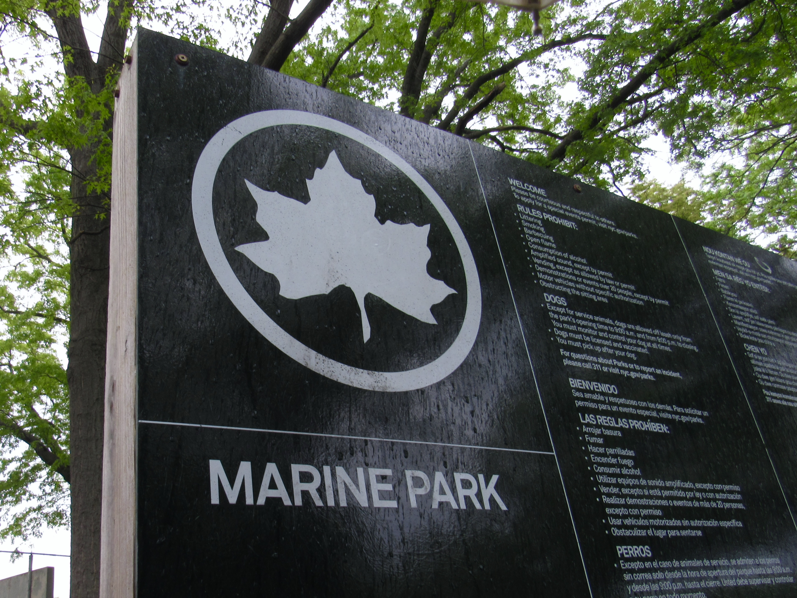

Members of a south Brooklyn climate advocacy group gathered in a Marine Park cafe on June 28 to celebrate the program's one-year anniversary.
The Climate Cafe South Brooklyn hosts discussions on how climate change is impacting the south Brooklyn community, and what steps residents can take to make a difference, according to Sam Daniele, the program’s founder.
“Climate Cafe South Brooklyn started because I wanted people in our community to have a space to talk honestly about climate change without feeling overwhelmed or alone,” Daniele said in a written statement.
Daniele serves as president of the Marine Park Young Adults Association, which runs the program. The association offers social programming and volunteer opportunities to young adults in the Marine Park neighborhood. The association was founded in June 2024, and focuses on community members ages 18 to 35, according to the organization’s website.
The Climate Cafe, which is open to all ages, is a recent extension of the group's existing programming, which also includes trash pickups, tree bed cleanups, trivia events, board game nights and more.
To commemorate one full year of programming under the Climate Cafe, community members gathered at Marine Park Coffee last month for a discussion and celebration featuring local artist Wing Kong as a guest speaker. Kong makes murals using litter and garbage to draw attention to pollution and street waste, the Brooklyn Paper previously reported.
The discussion focused on reducing plastic consumption, and Kong shared how she repurposes non-recyclable materials in her work, Daniele said. The group ended their celebration with donuts from another local business, Shaikh’s Place, located at 1503 Avenue U.
Organizers with the Climate Cafe plan to continue their environmental advocacy work and hope to make a difference in their community.
“Even small local actions, whether it is reducing plastic use, learning more, or showing up for community events, can make people feel more connected and hopeful,” Daniele said.